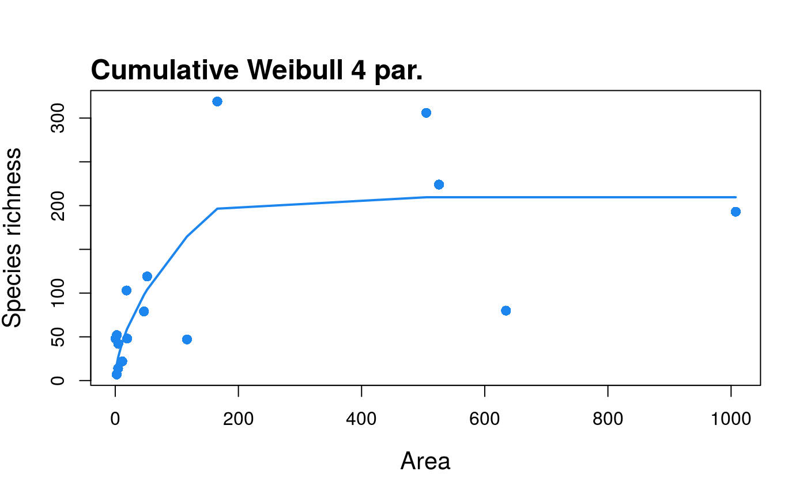

Fit the Cumulative Weibull 4 par. model to SAR data
sar_weibull4(data, custstart = NULL, normtest = 'lillie')
| data | A dataset in the form of a dataframe with two columns: the first with island/site areas, and the second with the species richness of each island/site. |
|---|
data(galap) fit <- sar_weibull4(galap) summary(fit)#> #> Model: #> Cumulative Weibull 4 par. #> #> Call: #> S == d * (1 - exp(-c * A^z))^f #> #> Did the model converge: TRUE #> #> Residuals: #> 0% 25% 50% 75% 100% #> -123.000 -35.000 -2.300 16.375 128.600 #> #> Parameters: #> Estimate Std. Error t value Pr(>|t|) 2.5% 97.5% #> d 2.0863e+02 3.5772e+01 5.8322e+00 8.0577e-05 1.3709e+02 280.1764 #> c 1.7383e-12 4.1226e-11 4.2164e-02 9.6706e-01 -8.0714e-11 0.0000 #> z 6.4194e+00 6.0776e+00 1.0562e+00 3.1166e-01 -5.7358e+00 18.5745 #> f 8.9022e-02 6.2393e-02 1.4268e+00 1.7914e-01 -3.5764e-02 0.2138 #> #> R-squared: 0.59, Adjusted R-squared: 0.44 #> AIC: 142.17, AICc: 148.17, BIC: 146.03 #> Observed shape: sigmoid, Asymptote: TRUE #>plot(fit)